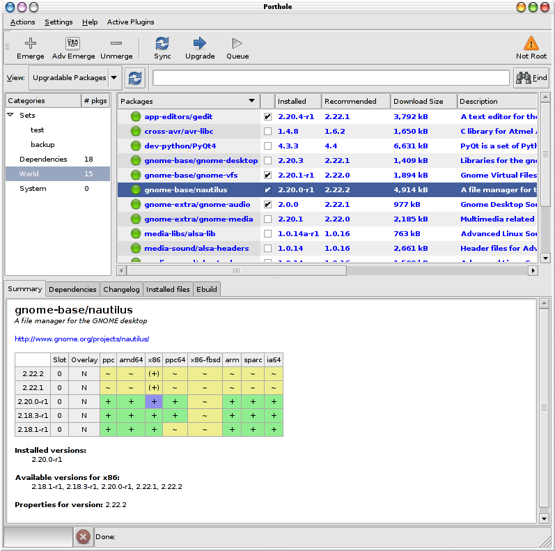

Update Packages
Upgradable Packages
To view the packages that you are able to upgrade, select the
"Upgradable Packages" view from the selector to the left of the search
bar. This will bring up a list of the packages where Portage's
recommended version differs from the currently installed version. Note
that if you have not selected "Upgradeonly" in the "Settings" menu,
this may also include packages that will be downgraded to a lower
version if they are selected. Downgrade recommended packages are
in red print while upgradeable packages are in blue print
Upon completion of the upgradeables list search it will display four
(4) categories of packages. They are Sets, Dependencies, World
and System. If you have defined and package "Sets" in
/etc/portage/sets/ then there will be an expander arrow next to
its name. Expanding it will list all package set names.
Also the number of packages detected as being upgradeable for
each package listing is listed next to its category name.
Currently, packages are listed in only one category. That
category is chosen by the following order:
- System. The package is a system package.
- Sets. The package is listed in a /etc/portage/sets/ file.
The order for selection is currently alphabetical. Sets are
currently supported in porthole for portage versions that do not have
built-in sets support. Built-in sets support is part of
portage-2.2 and later versions. Any sets packages will be handled
like any other package by portage for any emerge operations. The
"sets" support is only handled by porthole itself. Pkgcore and
Paludis have built-in "sets" support, but this version of porthole
cannot be configured to use those package managers for installs.
- World. The package was not chosen for inclusion in any of
the previous categories nad is listed in the "world" file. Note
that not all world file packages will be listed. Packages that
fit in any of the previuos categories have been filtered out already
and are listed in those categories.
- Dependencies. Any upgradeable package that did not fit any
of the previuos categories are listed here. Any upgrade
selections here will have the --oneshot option added to their command
to prevent them from being added to your world file.
By default, none of the packages listed will be selected for you. If
you wish to select all
or none of the available packages, right-click somewhere in the package
list and choose "Select All" or "De-Select All". Individual package
selection is done by clicking on each pacgage and clicking on the
checkbox to select or de-select that package for update.
When you are happy with the selection of packages to upgrade, clicking
the "Upgrade" button in the toolbar will add the selected
packages to the Terminal Window's
emerge queue, with appropriate emerge options. The packages sent
are only the packages selected in the packages listing being viewed.
It will not add packages from any of the other categories.

Advanced Upgrades
If you just want to upgrade everything on your system, it is sometimes best to run a custom command instead. Some possibilities are:
- emerge --update world - update all packages in your world file
- emerge --update --deep world - as above, but upgrade dependencies as well
- emerge --update --deep --newuse world - as above, but also recompile packages affected by any changes in use flag settings
- emerge --update --deep --newuse --tree --pretend --verbose world
- show everything that could be updated and what it depends on in a
nice organised tree, with details of use flags, versions and download
sizes, then calculate the expected amount of time it will take :).
- emerge --update system - update your system files
- etc.
Custom commands can be entered in the "Run Custom
Command" dialog which is activated by the "Actions" menu option.
Further information about running custom commands can be found here.
Notes: